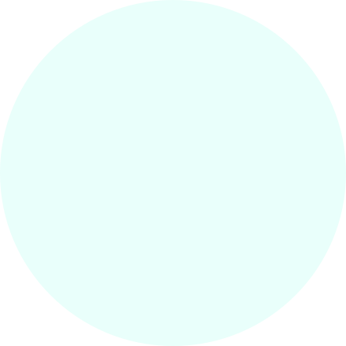
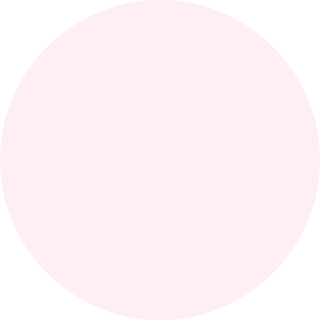

Matemática ficou mais fácil. com SenseVision.
Matemática
ficou mais
fácil.SenseVision.
Óculos inteligentes que capturam exercícios matemáticos
e os transformam em representações visuais simples
para pessoas com Discalculia. Câmera → OCR →
Óculos inteligentes que capturam exercícios matemáticos e os transformam em imagens simples para pessoas com Discalculia.
Câmera captura o exercício
↓ interpretado como
Resposta: 5
"A resposta é cinco"
Público-alvo
Crianças e adolesc. com Discalculia, pais e escolas
Objetivo
Facilitar a compreensão matemática com IA e frutas
Diferencial
Único foco em Discalculia: óculos + app + método visual
3–6%
da população
tem Discalculia
MVP
R$165–R$230
protótipo inicial
100%
Open source
e acessível
5
membros
na equipe
Público: Crianças e adolescentes com Discalculia
Câmera ESP32-CAM + OCR + App Mobile
Método visual com frutas para compreensão
Feedback de áudio em tempo real